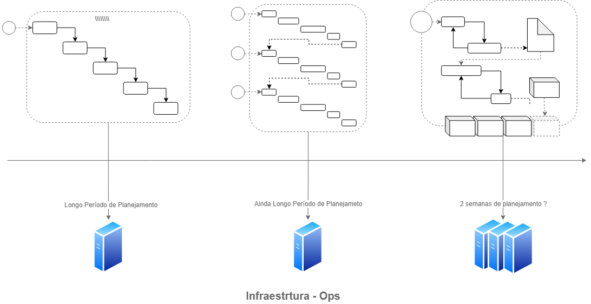

DevOps
Visão Geral
Apresentação
https://celso-wo.github.io/devops-presentation/
Código Fonte
https://github.com/celso-wo/devops-presentation
Desenvolvimento de Software - Cascata
Desenvolvimento de Software - Cascata
- Uníco ciclo (longo)
- Etapas sequências
- Entregável muito grande
- Participação do usuário no início e no fim
Desenvolvimento de Software - Espiral
Desenvolvimento de Software - Espiral
- Mais cicls (médio)
- Etapas sequências
- Entregáveis menores, porém ainda grandes
- Maior participação do usuário pois ocorrem mais ciclos
Desenvolvimento de Software - Ágil
Desenvolvimento de Software - Ágil
- Ciclos pequenos
- Etapas indepentes e mais interativas
- Entregáveis pequenos e com frequência
- Participação do usuário durante o processo
Desenvolvimento de Software - Ágil + Escala
Desenvolvimento de Software - Ágil + Escala
- Os sistemas são decompostos em projetos menores
- Muitos times e muitos entregáveis
- A equipe de desenvolvimento passa a produzir muito
Ops?!
Ops?!
- Entregável é diferente de Entregue
- Janelas de absurdas de atualizações
- Várias aplicações e muitas máquinas
- A infraestrutura se tornou um "gargalo"
- Inovação x Estabilidade x Segurança
Ops - Solução é a Infra Ágil?
- A infraestrutura se torna mais ágil
- Passa a utilizar mais ferramentas de configurações como Chef e Puppet
- Desenvolvimento não entende a demora da infrestrutura
- Mas o desenvolvimento (Inovação do Produto) x operação (Estabilidade) ainda em conflito
Competividade externa x interna
- As equipes mais produtivas passam a trabalhar com desenvolvimento e operações juntas
- Muito desenvolvimento, mas com muita entregas reais (até o usuário)
- Nasce o conceito de DevOps
DevOps
DevOps
- Atlassian - "Aperto de mãos firme entre a área de desenvolvimento com operações efatizando uma mudança de mentalidade, melhor colaboração e integração mais forte"
- Ainda não existe uma cartilha para DevOps, apenas vivência e boas práticas
- DevOps não é apenas um conjunto de práticas ou ferramentas, está mais perto de uma cultura/filosofia/hábito na construção de produtos
DevOps - Integração Contínua - CI
- O código é analisado, construído e testado constantemente
- Processo disparado automaticamente a cada mudança submetida ao repositório de código
- Gerando muitos entregáveis
- Ferramentas: Jenkins, TravisCI, GoCD, BitbucketPipeline
DevOps - Entregável - Microserviços
- As aplicações passam a se tornarem menores para facilitar a construção e testes
- Migração para containers
- Facilita a entrega (Deploy)
- Microframeworks: SpringBoot, Laravel, ExpressJS
DevOps - Entrega Contínua - CD
- Automação no processo de entrega do "entregável" do desenvolvimento
- Utilização de ferramentas de configuração e orquestração (containers)
- Ferramentas: Chef, Puppet, Kubernetes, Rancher, Meso, Docker Swarm
DevOps - Monitoramento e Logging
- Todas as aplicações são monitoradas
- Ferramentas: ELK, FluentD, Nagios
DevOps - Infraestrutura como Código
- A infraestrutura é versionável e reproduzível em outros lugares
- Todos os scripts são ou processos são guardados em repositórios de código
- Utilizam de programação para automatizar os processo: Python e Ruby

Próximos Passos
- Preciso ser DevOps? Preciso dessa agilidade na minha empresa?
- Entender em qual estágio está o processo de desenvolvimento
- Mudança cultural entre a gestão, densenvolvimento e infraestrutura
- Automação em tudo